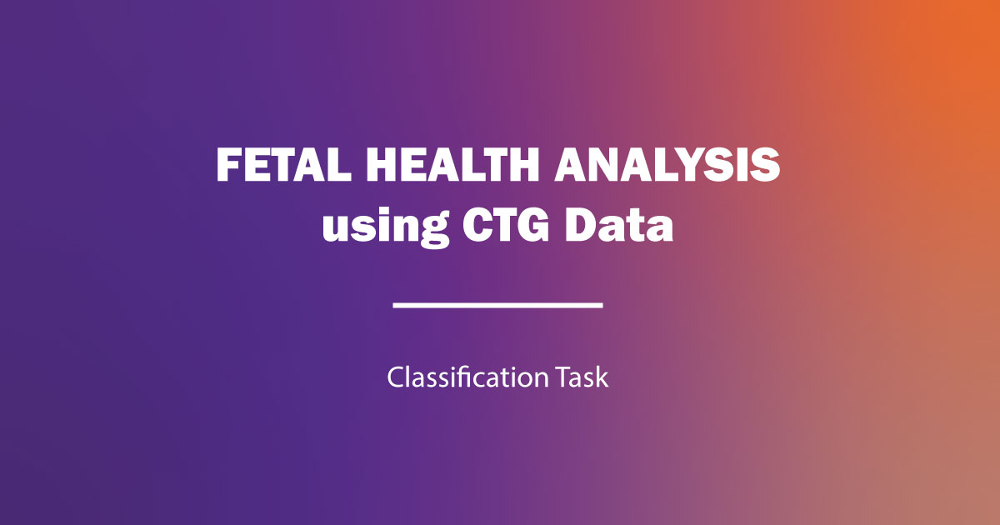
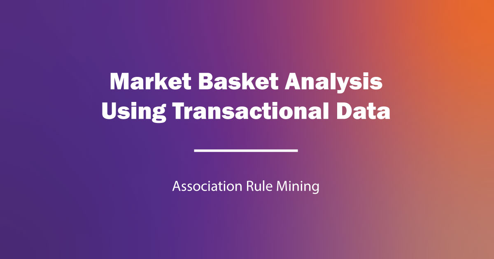
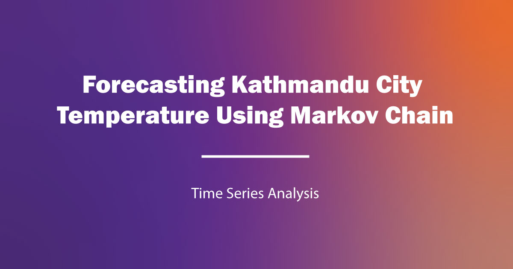

Fetal Health Classification
Classifying fetal health using CTG data.
I am Ram Krishna Pudasaini, a data science professional with a completed Master's in Data Science and a background in digital marketing, analytics, and technology training.

Curious by nature. Practical by design. Focused on building technology that helps people understand themselves and their world.
My work sits at the intersection of statistical thinking, machine learning, and accessible digital products.
Digital Addiction Risk Assessment System
Data scienceAI / MLSocial impactDARAS is my capstone project based on my thesis topic. It explores a data-driven approach to assessing digital addiction risk and presenting meaningful indicators for earlier awareness and support.
Pandas, NumPy, statistical analysis, data cleaning, visualization, and reproducible workflows.
Regression, classification, decision trees, random forest, ensemble methods, clustering, PCA, NLP, CNN, RNN, and LSTM.
Digital marketing, SEO, Google Ads, campaign analytics, content, and experience turning technical ideas into clear communication.

Classifying fetal health using CTG data.

Analyzing transactions for product associations.

Exploring Kathmandu temperature trends and commodity future prices.
Oversaw all digital activities, including website management for OM Networks and Platforms Hub.
Planned and executed search, display, video, social, SMS, and email campaigns.
Developed digital marketing plans, managed SEM and SEO projects, and planned Google Ads campaigns.